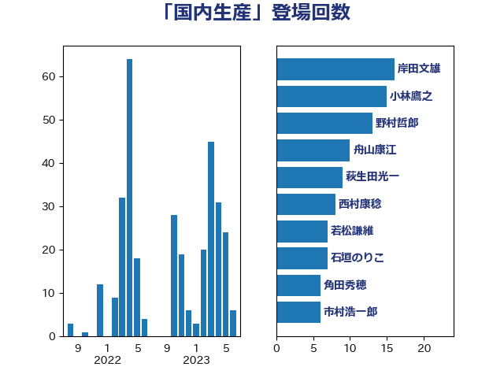

単語「国内生産」

| 岸田文雄 | 自由民主党 | 16 回 |
| 小林鷹之 | 自由民主党 | 15 回 |
| 野村哲郎 | 自由民主党 | 13 回 |
| 舟山康江 | 国民民主党 | 10 回 |
| 萩生田光一 | 自由民主党 | 9 回 |
| 西村康稔 | 自由民主党 | 8 回 |
| 若松謙維 | 公明党 | 7 回 |
| 石垣のりこ | 立憲民主党 | 7 回 |
| 角田秀穂 | 公明党 | 6 回 |
| 市村浩一郎 | 日本維新の会 | 6 回 |
| 須藤元気 | 無所属 | 4 回 |
| 紙智子 | 日本共産党 | 4 回 |
| 空本誠喜 | 日本維新の会 | 4 回 |
| 田中健 | 国民民主党 | 4 回 |
| 横沢高徳 | 立憲民主党 | 4 回 |
| 山本剛正 | 日本維新の会 | 4 回 |
| 塩川鉄也 | 日本共産党 | 4 回 |
| 高木かおり | 日本維新の会 | 3 回 |
| 高市早苗 | 自由民主党 | 3 回 |
| 羽田次郎 | 立憲民主党 | 3 回 |
| 礒崎哲史 | 国民民主党 | 3 回 |
| 田村貴昭 | 日本共産党 | 3 回 |
| 田村まみ | 国民民主党 | 3 回 |
| 林芳正 | 自由民主党 | 3 回 |
| 杉尾秀哉 | 立憲民主党 | 3 回 |
| 平木大作 | 公明党 | 3 回 |
| 川合孝典 | 国民民主党 | 3 回 |
| 山岡達丸 | 立憲民主党 | 3 回 |
| 加藤勝信 | 自由民主党 | 3 回 |
| 鈴木俊一 | 自由民主党 | 2 回 |
| 進藤金日子 | 自由民主党 | 2 回 |
| 谷田川元 | 立憲民主党 | 2 回 |
| 谷川とむ | 自由民主党 | 2 回 |
| 米山隆一 | 立憲民主党 | 2 回 |
| 稲富修二 | 立憲民主党 | 2 回 |
| 牧原秀樹 | 自由民主党 | 2 回 |
| 渡辺創 | 立憲民主党 | 2 回 |
| 浜田靖一 | 自由民主党 | 2 回 |
| 池畑浩太朗 | 日本維新の会 | 2 回 |
| 江藤拓 | 自由民主党 | 2 回 |
| 櫛渕万里 | れいわ新選組 | 2 回 |
| 山田勝彦 | 立憲民主党 | 2 回 |
| 小山展弘 | 立憲民主党 | 2 回 |
| 寺田静 | 無所属 | 2 回 |
| 大石あきこ | れいわ新選組 | 2 回 |
| 勝俣孝明 | 自由民主党 | 2 回 |
| 加藤明良 | 自由民主党 | 2 回 |
| 中村裕之 | 自由民主党 | 2 回 |
| 高橋はるみ | 自由民主党 | 1 回 |
| 高木真理 | 立憲民主党 | 1 回 |
| 青山繁晴 | 自由民主党 | 1 回 |
| 青山周平 | 自由民主党 | 1 回 |
| 長峯誠 | 自由民主党 | 1 回 |
| 鈴木貴子 | 自由民主党 | 1 回 |
| 鈴木義弘 | 国民民主党 | 1 回 |
| 道下大樹 | 立憲民主党 | 1 回 |
| 西野太亮 | 自由民主党 | 1 回 |
| 藤木眞也 | 自由民主党 | 1 回 |
| 落合貴之 | 立憲民主党 | 1 回 |
| 船橋利実 | 自由民主党 | 1 回 |
| 舩後靖彦 | れいわ新選組 | 1 回 |
| 緑川貴士 | 立憲民主党 | 1 回 |
| 細田健一 | 自由民主党 | 1 回 |
| 篠原豪 | 立憲民主党 | 1 回 |
| 笠井亮 | 日本共産党 | 1 回 |
| 竹内譲 | 公明党 | 1 回 |
| 稲津久 | 公明党 | 1 回 |
| 石井啓一 | 公明党 | 1 回 |
| 矢倉克夫 | 公明党 | 1 回 |
| 田村智子 | 日本共産党 | 1 回 |
| 田名部匡代 | 立憲民主党 | 1 回 |
| 猪瀬直樹 | 日本維新の会 | 1 回 |
| 片山大介 | 日本維新の会 | 1 回 |
| 片山さつき | 自由民主党 | 1 回 |
| 漆間譲司 | 日本維新の会 | 1 回 |
| 渡辺孝一 | 自由民主党 | 1 回 |
| 水野素子 | 立憲民主党 | 1 回 |
| 梅谷守 | 立憲民主党 | 1 回 |
| 松野博一 | 自由民主党 | 1 回 |
| 本庄知史 | 立憲民主党 | 1 回 |
| 木原誠二 | 自由民主党 | 1 回 |
| 斉藤鉄夫 | 公明党 | 1 回 |
| 庄子賢一 | 公明党 | 1 回 |
| 広瀬めぐみ | 自由民主党 | 1 回 |
| 平山佐知子 | 無所属 | 1 回 |
| 平将明 | 自由民主党 | 1 回 |
| 川田龍平 | 立憲民主党 | 1 回 |
| 山際大志郎 | 自由民主党 | 1 回 |
| 山本左近 | 自由民主党 | 1 回 |
| 山本啓介 | 自由民主党 | 1 回 |
| 山口那津男 | 公明党 | 1 回 |
| 山下貴司 | 自由民主党 | 1 回 |
| 小野泰輔 | 日本維新の会 | 1 回 |
| 大野泰正 | 自由民主党 | 1 回 |
| 大野敬太郎 | 自由民主党 | 1 回 |
| 大塚耕平 | 国民民主党 | 1 回 |
| 吉田統彦 | 立憲民主党 | 1 回 |
| 前原誠司 | 国民民主党 | 1 回 |
| 伊藤渉 | 公明党 | 1 回 |
| 中野洋昌 | 公明党 | 1 回 |
| 下野六太 | 公明党 | 1 回 |
| 三宅伸吾 | 自由民主党 | 1 回 |
| たがや亮 | れいわ新選組 | 1 回 |